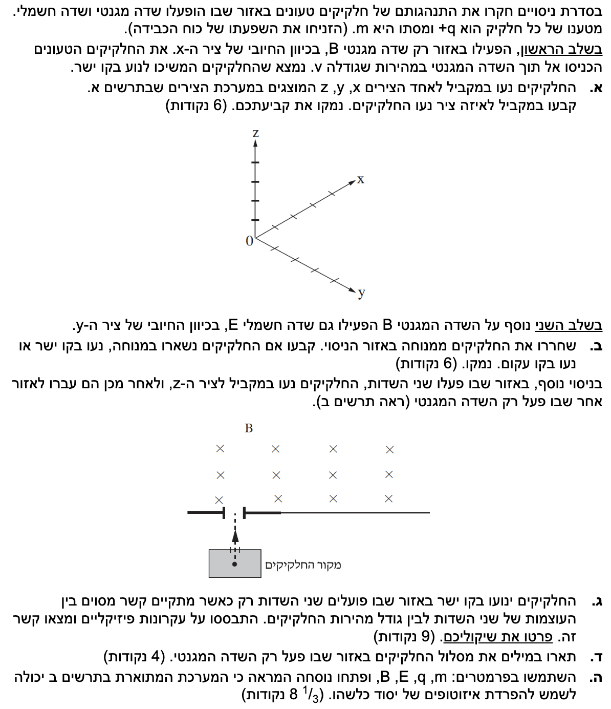
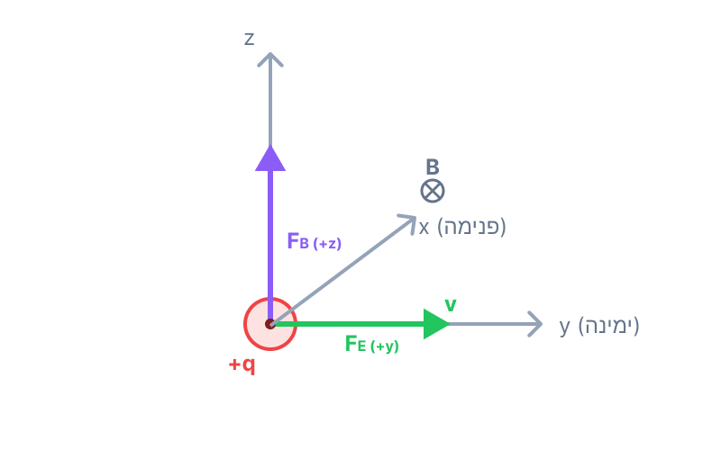
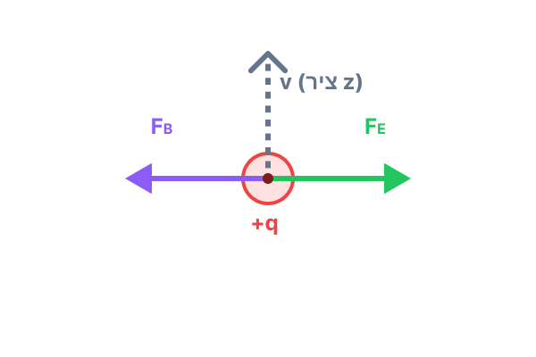
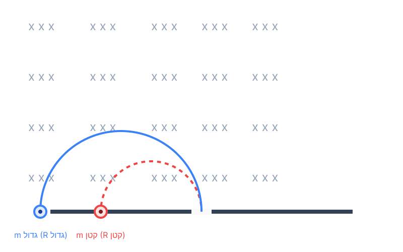

פתרון מודרך בפיזיקה - תנועת חלקיקים טעונים בשדות
בגרות 2014, שאלה 5 (חשמל ומגנטיות)
עודכן:
--- --:--:--
שלום תלמידים! בשאלה זו נחקור תנועה של חלקיקים טעונים המושפעים משדה מגנטי ושדה חשמלי. נלמד צעד אחר צעד כיצד לנתח את הכוחות הפועלים עליהם ולהבין תהליך חשוב במדע הנקרא "הפרדת איזוטופים". זכרו, כל פתרון מתחיל בהבנה ברורה של הנתונים והכוחות. בואו נתחיל!

[תמונת השאלה המקורית]
לא נמצאה תמונה בשם question-image.png באותה תיקייה.
מה נתון:
חלקיקים בעלי מטען חיובי \( +q \) ומסה \( m \). כוח הכבידה זניח.
מופעל שדה מגנטי \( B \) בכיוון החיובי של ציר ה-\( x \).
החלקיקים נכנסים לשדה במהירות שגודלה \( v \).
החלקיקים ממשיכים לנוע בקו ישר (מקביל לאחד הצירים).
הערה: כל הנתונים מבוטאים בפרמטרים המייצגים יחידות תקניות במערכת MKS.
מה מחפשים: לקבוע לאיזה ציר במערכת הצירים מקביל כיוון התנועה של החלקיקים, ולנמק.
נוסחאות ועקרונות בשימוש:
\( \Sigma\vec{F} = m\vec{a} \)
\( F = qvB\sin\alpha \)
פתרון צעד-אחר-צעד:
נשים לב שאם היה פועל על החלקיקים כוח מגנטי שאינו אפס (בהיעדר כוחות אחרים), כוח זה היה פועל תמיד במאונך לכיוון התנועה שלהם. כוח המאונך לכיוון התנועה מחייב שינוי בכיוון המהירות, והיה גורם לחלקיק לסטות ממסלולו (לנוע במסלול עקום). מכיוון שנתון כי החלקיקים ממשיכים לנוע בקו ישר ואין כוחות נוספים הפועלים עליהם, אנו מסיקים ששקול הכוחות עליהם חייב להיות אפס. כלומר, הכוח המגנטי הפועל עליהם הוא בהכרח אפס:
\[ F_B = q \cdot v \cdot B \cdot \sin\alpha = 0 \]
אנו יודעים כי המטען \( q \neq 0 \), גודל המהירות \( v \neq 0 \) וגודל השדה \( B \neq 0 \). מכאן נובע בהכרח כי:
\[ \sin\alpha = 0 \quad \Rightarrow \quad \alpha = 0^\circ \text{ או } \alpha = 180^\circ \]
הזווית \( \alpha \) היא הזווית שבין וקטור המהירות לווקטור השדה המגנטי. משמעות התוצאה היא שווקטור המהירות מקביל לווקטור השדה המגנטי או אנטי-מקביל אליו. כיוון שנתון כי השדה המגנטי מכוון לאורך ציר ה-\( x \), המהירות חייבת גם היא להיות לאורך (מקבילה) לציר ה-x.
תשובה סופית: החלקיקים נעים במקביל לציר ה- x.
טיפ מורה:
זכרו שחלקיק טעון הנע במקביל (או אנטי-מקביל) לקווי השדה המגנטי אינו מרגיש כוח מגנטי כלל! הכוח המגנטי תמיד תלוי ברכיב המהירות שניצב לשדה.
מה נתון:
בנוסף לשדה המגנטי \( B \) (בכיוון \( +x \)), מופעל כעת גם שדה חשמלי \( E \) בכיוון החיובי של ציר ה-\( y \).
החלקיקים משוחררים ממנוחה (כלומר המהירות ההתחלתית היא \( v_0 = 0 \)).
מה מחפשים: לקבוע האם החלקיקים יישארו במנוחה, ינועו בקו ישר, או ינועו בקו עקום, ולנמק.
נוסחאות ועקרונות בשימוש:
\( \vec{E} = \frac{\vec{F}}{q} \Rightarrow \vec{F}_E = q\vec{E} \)
\( F_B = qvB\sin\alpha \)
כלל יד ימין
פתרון צעד-אחר-צעד:
ברגע השחרור (זמן \( t=0 \)), המהירות היא אפס. לכן, על פי הנוסחה לכוח המגנטי, לא פועל בשלב זה כוח מגנטי. עם זאת, השדה החשמלי מפעיל כוח קבוע על המטען החיובי בכיוון השדה (ציר ה-\( y \) החיובי):
\[ \Sigma F_y = F_E = qE = ma_y \]
כתוצאה מכך, החלקיק מתחיל להאיץ (גודל מהירותו גדל) בכיוון ציר ה-\( y \). ברגע שלחלקיק יש מהירות \( v \) בכיוון ה-\( y \), הוא נע בניצב לשדה המגנטי המכוון בציר ה-\( x \). נפעיל כעת את כלל יד ימין: האגודל מצביע לכיוון המהירות (כיוון \( +y \), ימינה), האצבעות לכיוון השדה המגנטי (כיוון \( +x \), לתוך הדף), וכף היד (עבור מטען חיובי) תצביע כלפי מעלה - כלומר הכוח המגנטי פועל בכיוון החיובי של ציר ה-\( z \).

לא ניתן לטעון את image-2.png
מכיוון שנוצר כוח חדש שניצב לכיוון התנועה, החלקיק יוסט ממסלולו הישר. כוח הפועל בניצב למהירות משנה את כיוון המהירות, ולכן המסלול יהיה עקום.
תשובה סופית: החלקיקים ינועו בקו עקום.
טיפ מורה:
שדה מגנטי אינו יכול לעשות עבודה ואינו יכול לשנות את גודל המהירות של החלקיק, הוא משנה רק את כיוונה. לכן חלקיק במנוחה לעולם לא יתחיל לנוע רק בגלל שדה מגנטי. הכוח החשמלי הוא זה שמעניק לו את המהירות הראשונית!
מה נתון:
החלקיקים נעים במקביל לציר ה-\( z \) (נסמן כיוון זה למעלה בשרטוט דו-ממדי).
גם שדה מגנטי וגם שדה חשמלי פועלים.
החלקיקים נעים בקו ישר.
מה מחפשים: למצוא את הקשר בין גודל השדה החשמלי, גודל השדה המגנטי וגודל מהירות החלקיקים המאפשר תנועה בקו ישר (ולפרט שיקולים).
נוסחאות ועקרונות בשימוש:
\( \Sigma\vec{F} = 0 \)
\( F_B = qvB\sin\alpha \)
\( F_E = qE \)
פתרון צעד-אחר-צעד:
כדי שהחלקיק ינוע בקו ישר, שקול הכוחות הפועל עליו בצירים הניצבים לתנועתו חייב להיות אפס (אחרת הייתה נוצרת תאוצה שמשנה את כיוון המהירות). המשמעות היא שהכוח החשמלי והכוח המגנטי חייבים להיות שווים בגודלם ומנוגדים בכיוונם כדי לבטל זה את זה.

לא ניתן לטעון את image-3.png
נרשום את משוואת הכוחות (כאשר המהירות ניצבת לשדה המגנטי, ולכן \( \sin 90^\circ = 1 \)):
\[ \Sigma F = 0 \]
\[ F_E - F_B = 0 \]
\[ qE = qvB \]
ניתן לצמצם את המטען \( q \) משני אגפי המשוואה (כיוון שאינו אפס), ונקבל את הקשר הדרוש:
\[ E = vB \quad \Rightarrow \quad v = \frac{E}{B} \]
תשובה סופית: הקשר המתקיים הוא \( v = \frac{E}{B} \). רק חלקיקים בעלי מהירות זו ינועו בקו ישר.
טיפ מורה:
מנגנון זה נקרא "בורר מהירויות". שימו לב שהמטען של החלקיק (\( q \)) והמסה שלו (\( m \)) מצטמצמים! כלומר, כל חלקיק (ללא קשר למסתו או מטענו) שיש לו את המהירות הספציפית \( v = E/B \) יעבור בקו ישר.
מה נתון:
לאחר המעבר באזור הכפול, החלקיקים נכנסים לאזור שבו פועל רק שדה מגנטי \( B \). כיוון כניסתם ניצב לכיוון קווי השדה המגנטי (כפי שרואים בתרשים ב', מהירות בכיוון הדף, שדה מגנטי לתוך הדף \( \times \)).
מה מחפשים: לתאר במילים את מסלול החלקיקים באזור זה.
נוסחאות ועקרונות בשימוש:
\( F_B = qvB\sin\alpha \)
\( a_R = \frac{v^2}{r} \)
פתרון צעד-אחר-צעד:
כאשר החלקיק נכנס לאזור השדה המגנטי בלבד, פועל עליו רק הכוח המגנטי. כוח זה פועל תמיד בניצב לווקטור המהירות (על פי כלל יד ימין). כוח שניצב לתנועה אינו מבצע עבודה ולכן אינו משנה את גודל המהירות של החלקיק, אלא רק את כיוונה. כיוון שגודל המהירות \( v \), המטען \( q \) וגודל השדה \( B \) נשארים קבועים, הכוח שומר על גודל קבוע. כוח קבוע בגודלו הפועל תמיד בניצב למהירות משמש ככוח צנטריפטלי וגורם לגוף לנוע במסלול מעגלי.
תשובה סופית: מסלול החלקיקים הוא קשת של מעגל (תנועה מעגלית קצובה).
טיפ מורה:
הקפידו תמיד להשתמש במושג "תנועה מעגלית קצובה" (Uniform Circular Motion), שכן גודל המהירות נשאר קבוע, רק כיוון המהירות משתנה (יש תאוצה רדיאלית, אך אין תאוצה משיקית).
מה נתון:
פרמטרים: מסה \( m \), מטען \( q \), שדה מגנטי \( B \) ושדה חשמלי \( E \).
איזוטופים: אטומים של אותו יסוד שיש להם אותו מטען חשמלי (\( q \)) אך מסה שונה (\( m \)).
מהירות הכניסה לאזור השני (שנקבעה בבורר המהירויות) היא \( v = \frac{E}{B} \).
מה מחפשים: לפתח נוסחה המראה שמערכת זו יכולה לשמש להפרדת איזוטופים.
נוסחאות ועקרונות בשימוש:
\( \Sigma F = m a_R \)
\( a_R = \frac{v^2}{R} \)
\( F_B = qvB \)
פתרון צעד-אחר-צעד:
באזור של השדה המגנטי בלבד מתקיימת תנועה מעגלית. הכוח המגנטי הוא הכוח הצנטריפטלי (הגורם לתאוצה הרדיאלית). נרשום את משוואת הכוחות עבור התנועה המעגלית:
\[ \Sigma F = ma_R \]
\[ qvB = m \frac{v^2}{R} \]
נצמצם ב-\( v \) אחד (שכן \( v \neq 0 \)) ונבודד את רדיוס המסלול המעגלי \( R \):
\[ qB = \frac{m v}{R} \quad \Rightarrow \quad R = \frac{m v}{q B} \]
נציב כעת את המהירות שמצאנו בסעיף ג', שהיא המהירות בה החלקיקים נכנסים לשדה: \( v = \frac{E}{B} \):
\[ R = \frac{m \left( \frac{E}{B} \right)}{q B} = \frac{m E}{q B^2} \]

לא ניתן לטעון את image-5.png
מן הנוסחה שפיתחנו אנו רואים כי כאשר המטען \( q \), השדה החשמלי \( E \) והשדה המגנטי \( B \) קבועים (לכל החלקיקים הנכנסים), רדיוס המסלול \( R \) עומד ביחס ישר למסה \( m \) (\( R \propto m \)). מכיוון שלאזוטופים יש מסות שונות, הם ינועו במסלולים בעלי רדיוסים שונים. האיזוטופ הכבד יותר ינוע בקשת גדולה יותר (רדיוס גדול יותר) ויפגע בלוח במרחק גדול יותר מפתח הכניסה, וכך הם יופרדו פיזית במרחב.
תשובה סופית: הנוסחה \( R = \frac{mE}{qB^2} \) מראה שרדיוס המסלול תלוי במסה. מסות שונות יפגעו במקומות שונים, ולכן המערכת מתאימה להפרדת איזוטופים.
טיפ מורה:
מכשיר זה נקרא "ספקטרומטר מסות" (Mass Spectrometer). שימו לב שאסור להשתמש בנוסחה \( R = \frac{mv}{qB} \) ישירות מבלי לפתח אותה מתוך החוק השני של ניוטון, כיוון שהיא אינה מופיעה בדף הנוסחאות המורחב! כלל ברזל בבגרות: מה שלא בדף הנוסחאות - חייב פיתוח מתוך עקרונות היסוד.